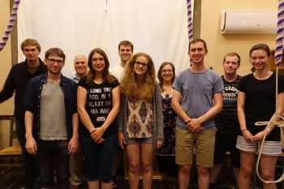

Peals and Quarters
2016/17
Tuesday, 29 August 2017
1260 Plain Bob Royal
The Ascension, Rochester, New York (11–1–7 in G) in 50m
- Claire L Pearson (Alcuin College)
- James A Sanderson (Huntington School 6th Form)
- Claire E Reading (Langwith College)
- Helen M Beaumont (Langwith College)
- Eric W S Wolever (Wentworth College)
- Nathan Cox (St Johns)
- Lucy B J Williamson (Alcuin College)
- Michael J Pollard (Vanbrugh College)
- David E Potter (St Johns)
- Simon A Percy (Alcuin College) (C)
First quarter on 10 abroad for YCG!
Band R to L: 1-5 on the front, 6 to 10 on the back.
Friday, 16 June 2017
1320 York Surprise Minor
St Lawrence, York, North Yorkshire (7-3-24 in A) in 43m
- Claire Reading
- Ryan Mills
- Claire L Pearson
- William L K Brooke
- Lucy Williamson
- Eric Wolever (C)
First treble bob hunt: 1
First blows in York: 3
First of York: 4
Rung to mark the commencement of the 47th York Colleges Guild Dinner Day.
Additionally,
Rung to celebrate the 1 year anniversary of Reading's trainers and the christening of Billy's new
shoes (which look exactly the same as the old ones!).
And now, to the pub....
Our sexy af band
Thursday, 1 June 2017
1260 Grandsire Doubles
St Lawrence, York, North Yorkshire (7-3-24 in A) in 41m
- Samuel Turner
- Eric Wolever (C)
- Caitlin Turpin
- Claire Reading
- William Brooke
- Holly Barrett
First quarter: 6
100th quarter: 2
First of Grandsire: 3
Rung to celebrate the end of exams!!
Birthday complements to June Kendall
Monday, 1 May 2017
1260 Grandsire Doubles
St Lawrence, York, North Yorkshire (7-3-24 in A) in 39m
- Samuel Turner
- Anna-Lena Bulgrin
- Eric Wolever
- Nathan Cox
- William Brooke (C)
- Claire Reading
First Grandsire inside: 2
First Grandsire conducted: 5